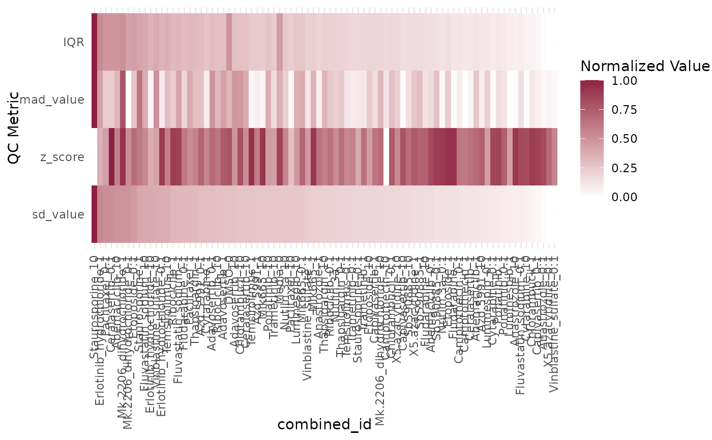

R/plot_qc_metrics_heatmap.R
plot_qc_metrics_heatmap.RdPlots multiple QC metrics from stats_summary as a heatmap, normalizing values between 0 and 1.
plot_qc_metrics_heatmap(
stats_summary = NULL,
group_by = NULL,
metrics = NULL,
order_by = NULL
)rds_file<-system.file("/extdata/PMMSq033/PMMSq033.rds", package = "macpie")
mac<-readRDS(rds_file)
qc_stats <- compute_qc_metrics(mac, group_by = "combined_id", order_by = "median")
plot_qc_metrics_heatmap(stats_summary = qc_stats$stats_summary, group_by = "combined_id")
